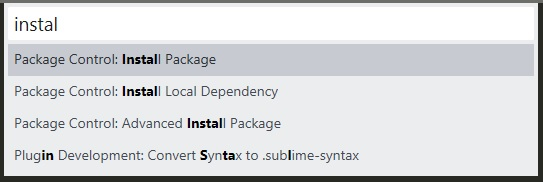
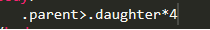
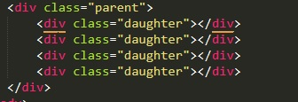
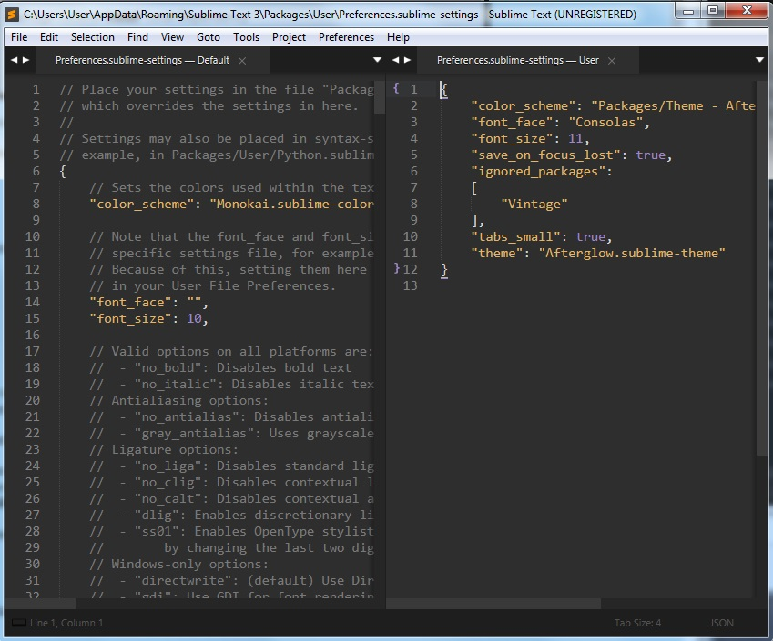

Скачать программу можно с официального сайта.
Для активации программы заходим на сайт hexed.it
Нажимаем open и указываем на файл sublime_text
После этого в строке поиска вбиваем: 97 94 0D и жмем поиск
После того как раздел был найден значения 97 94 0D меняем на 00 00 00
После этого жмем кнопку Export и созраняем файл на рабочий стол. После этого этим же файлом заменяем основной.
Следующий шаг - надо в файле host добавить две строчки:
127.0.0.1 license.sublimehq.com # SublimeText
127.0.0.1 www.sublimetext.com # SublimeText
Теперь открываем sublime - Help - Enter License и вводим:
----- BEGIN LICENSE -----
TwitterInc
200 User License
EA7E-890007
1D77F72E 390CDD93 4DCBA022 FAF60790
61AA12C0 A37081C5 D0316412 4584D136
94D7F7D4 95BC8C1C 527DA828 560BB037
D1EDDD8C AE7B379F 50C9D69D B35179EF
2FE898C4 8E4277A8 555CE714 E1FB0E43
D5D52613 C3D12E98 BC49967F 7652EED2
9D2D2E61 67610860 6D338B72 5CF95C69
E36B85CC 84991F19 7575D828 470A92AB
------ END LICENSE ------
Забавный парадокс, для того что бы установить в Sublime Text плагины, надо установить в него плагин.
Для этого надо установить Package control. Для этого открываем Sublime Text и запускаем консоль (Ctrl + ~) и копируем туда вот такой текст:
import urllib.request,os,hashlib; h = '6f4c264a24d933ce70df5dedcf1dcaee' + 'ebe013ee18cced0ef93d5f746d80ef60'; pf = 'Package Control.sublime-package'; ipp = sublime.installed_packages_path(); urllib.request.install_opener( urllib.request.build_opener( urllib.request.ProxyHandler()) ); by = urllib.request.urlopen( 'http://packagecontrol.io/' + pf.replace(' ', '%20')).read(); dh = hashlib.sha256(by).hexdigest(); print('Error validating download (got %s instead of %s), please try manual install' % (dh, h)) if dh != h else open(os.path.join( ipp, pf), 'wb' ).write(by)
После этого перезапускаем Sublime Text, и нажимаем сочетание клавишь Ctrl + Shift + p. Откроетра икно ввода. В окне вводт слово instal, и в списке должен появиться Package Control: Install Package
Выбираем его, после чего можно устанавливать плагины. Какие плагины необходимо установить:
Emmet - этот плагин позволяет не печатать теги полностью. Так же он помогает быстро создавать вложенные теги
пример:

после написания такой строки и нажатия кнопки tab плагин создаст блок с классом parent и восемь блоков с классом daughter

AutoFileName - этот плагин позволяет в тегах a и img в атрибутах src указывать файлы которые находятся в той же директории что и сам документ html. т.е - когда мы встанем на атрибут src у нас появится выпадающий список с выбором файлов
brackethighlighter - этот плагин подсвечивает теги открытия и тег закрытия у выбранного элемента
ColorPicker - Крошечный, но очень полезный плагин добавит возможность выбирать и подбирать цвет из круговой палитры в hex-формате. Открывается в отдельном окошке и позволяет выбрать цвет как из палитры, так и из любого места на экране.Для вызова палиты зажимаем Ctrl+Shift+C
ColorHelper - Штука, которая есть во многих средах разработки, но почему-то упущена в Саблайме – превью цвета.
Browser Sync - синхронизация кода с браузером
Terminal - позволяет запустить терминал из директории файла. Для запуска жмем сочетание клавиш: Ctrl + Shift + T
JavaScript Completions - Автокомплит для JavaScript
Console Wrap - при помощи клавиш Ctrl + Shift + Q оборачивает выделенный текст в консоль
Зажимаем Ctrl+Shift +B, выбираем Package Control: Install Package и вводим там AfterGlow. Поиск выдаст тему After Glow
Выбираем ее, после установки откроется двойное окно Settings
в правой части надо добавить следующий текст:
После чего сохраняем (Ctrl+S)
Здесь же мы настроили автосохранение файлов командой:
"save_on_focus_lost": true,
Первое что нужно сделать это установить плагин Babel
После этого открываем в меню: Preferences - Key Bindings
Откроется окно которое поделено на две части. В праву сторону копируем код:
Теперь после того как мы открыли файл который содержит JSX код мы идем по меню: View - Syntax - Babel - JavaScript (Babel)